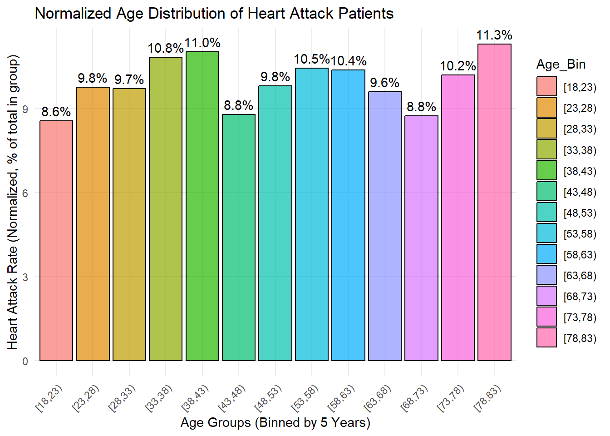
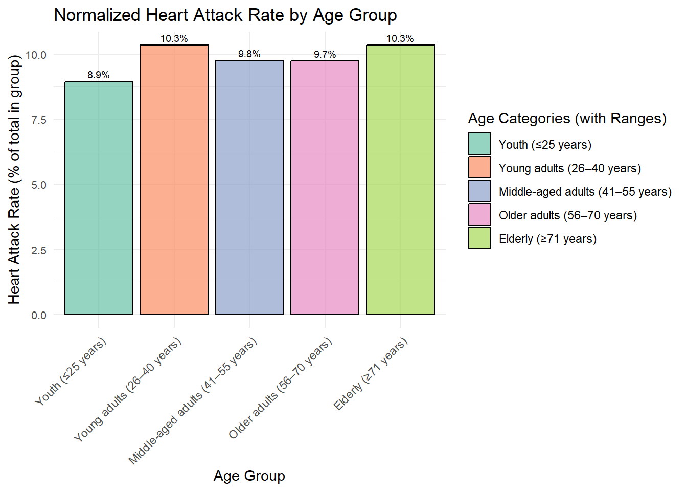
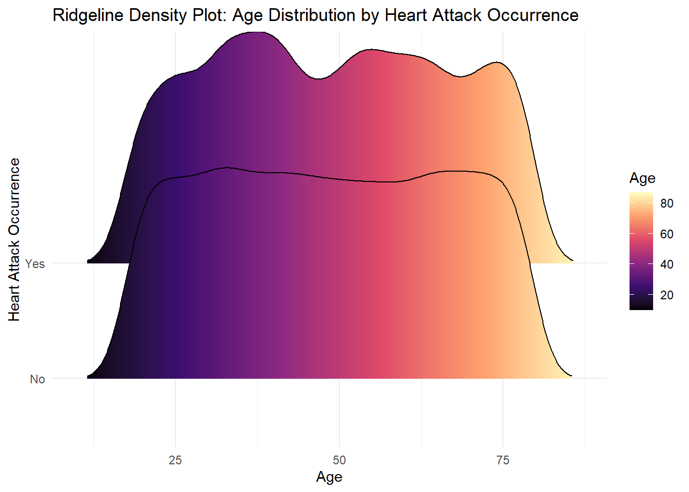
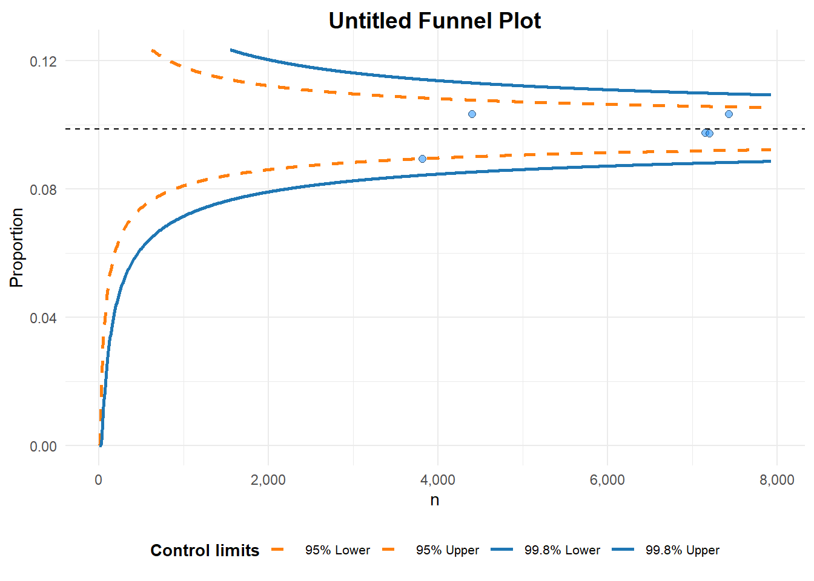

Code
pacman::p_load(tidyverse, haven, knitr,
patchwork, ggthemes, scales,
ggridges, ggpubr, gganimate,
ggdist, ggtext, ggalt,
cowplot, ggnewscale,FunnelPlotR)This analysis explores heart attack incidents in Japan, focusing on the differences in risk factors between youth and adult age groups. With the growing global prevalence of heart disease, understanding how age influences heart attack likelihood and identifying the strongest predictors are crucial for shaping targeted prevention strategies and healthcare interventions.
The dataset from Kaggle - Heart Attack in Japan Youth Vs Adult provides an opportunity to analyze these aspects, helping healthcare providers, policymakers, and researchers develop age-specific awareness campaigns, preventive measures, and resource allocation strategies tailored to reducing heart attack risks in Japan.
Using the Heart Attack in Japan: Youth vs. Adult dataset, this Take-home_Ex01 applies appropriate Exploratory Data Analysis (EDA) methods, using the tidyverse package and ggplot functions to:
The following R packages will be loaded for this exercise using pacman::p_load():
pacman::p_load(tidyverse, haven, knitr,
patchwork, ggthemes, scales,
ggridges, ggpubr, gganimate,
ggdist, ggtext, ggalt,
cowplot, ggnewscale,FunnelPlotR)The code chunk below imports the Heart Attack in Japan: Youth vs. Adult dataset, downloaded from Kaggle, using the read_csv() function from the readr package.
heart_attack <- read_csv("data/japan_heart_attack_dataset.csv", show_col_types = FALSE)
heart_attack# A tibble: 30,000 × 32
Age Gender Region Smoking_History Diabetes_History Hypertension_History
<dbl> <chr> <chr> <chr> <chr> <chr>
1 56 Male Urban Yes No No
2 69 Male Urban No No No
3 46 Male Rural Yes No No
4 32 Female Urban No No No
5 60 Female Rural No No No
6 25 Female Rural No No No
7 78 Male Urban No Yes Yes
8 38 Female Urban Yes No No
9 56 Male Rural No No Yes
10 75 Male Urban No No No
# ℹ 29,990 more rows
# ℹ 26 more variables: Cholesterol_Level <dbl>, Physical_Activity <chr>,
# Diet_Quality <chr>, Alcohol_Consumption <chr>, Stress_Levels <dbl>,
# BMI <dbl>, Heart_Rate <dbl>, Systolic_BP <dbl>, Diastolic_BP <dbl>,
# Family_History <chr>, Heart_Attack_Occurrence <chr>, Extra_Column_1 <dbl>,
# Extra_Column_2 <dbl>, Extra_Column_3 <dbl>, Extra_Column_4 <dbl>,
# Extra_Column_5 <dbl>, Extra_Column_6 <dbl>, Extra_Column_7 <dbl>, …The dataset is structured as a tibble dataframe, containing 30,000 rows and 32 columns. Each observation represents an individual case, and the variables capture key medical and demographic information relevant to heart attack incidents across different age groups in Japan.
We will check the dataset using below
glimpse(): provides a transposed overview of a dataset, showing variables and their types in a concise format.head(): displays the first few rows of a dataset (default is 6 rows) to give a quick preview of the data.summary(): generates a statistical summary of each variable, including measures like mean, median, and range for numeric data.duplicated():returns a logical vector indicating which elements or rows in a vector or data frame are duplicates.colSums(is.na()): counts the number of missing values (NA) in each column of the data frame.spec(): use spec() to quickly inspect the columnglimpse(heart_attack)Rows: 30,000
Columns: 32
$ Age <dbl> 56, 69, 46, 32, 60, 25, 78, 38, 56, 75, 36, 40…
$ Gender <chr> "Male", "Male", "Male", "Female", "Female", "F…
$ Region <chr> "Urban", "Urban", "Rural", "Urban", "Rural", "…
$ Smoking_History <chr> "Yes", "No", "Yes", "No", "No", "No", "No", "Y…
$ Diabetes_History <chr> "No", "No", "No", "No", "No", "No", "Yes", "No…
$ Hypertension_History <chr> "No", "No", "No", "No", "No", "No", "Yes", "No…
$ Cholesterol_Level <dbl> 186.4002, 185.1367, 210.6966, 211.1655, 223.81…
$ Physical_Activity <chr> "Moderate", "Low", "Low", "Moderate", "High", …
$ Diet_Quality <chr> "Poor", "Good", "Average", "Good", "Good", "Go…
$ Alcohol_Consumption <chr> "Low", "Low", "Moderate", "High", "High", "Hig…
$ Stress_Levels <dbl> 3.644786, 3.384056, 3.810911, 6.014878, 6.8068…
$ BMI <dbl> 33.96135, 28.24287, 27.60121, 23.71729, 19.771…
$ Heart_Rate <dbl> 72.30153, 57.45764, 64.65870, 55.13147, 76.667…
$ Systolic_BP <dbl> 123.90209, 129.89331, 145.65490, 131.78522, 10…
$ Diastolic_BP <dbl> 85.68281, 73.52426, 71.99481, 68.21133, 92.902…
$ Family_History <chr> "No", "Yes", "No", "No", "No", "No", "No", "No…
$ Heart_Attack_Occurrence <chr> "No", "No", "No", "No", "No", "No", "No", "No"…
$ Extra_Column_1 <dbl> 0.40498852, 0.03627815, 0.85297888, 0.39085280…
$ Extra_Column_2 <dbl> 0.43330004, 0.51256694, 0.21959083, 0.29684675…
$ Extra_Column_3 <dbl> 0.62871236, 0.66839275, 0.61343656, 0.15572404…
$ Extra_Column_4 <dbl> 0.70160955, 0.11552874, 0.50800995, 0.87025144…
$ Extra_Column_5 <dbl> 0.49814235, 0.42381938, 0.90066981, 0.39035591…
$ Extra_Column_6 <dbl> 0.007901312, 0.083932768, 0.227205241, 0.40318…
$ Extra_Column_7 <dbl> 0.79458257, 0.68895108, 0.49634358, 0.74140891…
$ Extra_Column_8 <dbl> 0.29077922, 0.83016364, 0.75210679, 0.22396813…
$ Extra_Column_9 <dbl> 0.49719307, 0.63449028, 0.18150125, 0.32931387…
$ Extra_Column_10 <dbl> 0.52199452, 0.30204337, 0.62918031, 0.14319054…
$ Extra_Column_11 <dbl> 0.79965663, 0.04368285, 0.01827617, 0.90778075…
$ Extra_Column_12 <dbl> 0.72239788, 0.45166789, 0.06322702, 0.54232201…
$ Extra_Column_13 <dbl> 0.1487387, 0.8786714, 0.1465122, 0.9224606, 0.…
$ Extra_Column_14 <dbl> 0.8340099, 0.5356022, 0.9972962, 0.6262165, 0.…
$ Extra_Column_15 <dbl> 0.061632229, 0.617825340, 0.974455410, 0.22860…head(heart_attack)# A tibble: 6 × 32
Age Gender Region Smoking_History Diabetes_History Hypertension_History
<dbl> <chr> <chr> <chr> <chr> <chr>
1 56 Male Urban Yes No No
2 69 Male Urban No No No
3 46 Male Rural Yes No No
4 32 Female Urban No No No
5 60 Female Rural No No No
6 25 Female Rural No No No
# ℹ 26 more variables: Cholesterol_Level <dbl>, Physical_Activity <chr>,
# Diet_Quality <chr>, Alcohol_Consumption <chr>, Stress_Levels <dbl>,
# BMI <dbl>, Heart_Rate <dbl>, Systolic_BP <dbl>, Diastolic_BP <dbl>,
# Family_History <chr>, Heart_Attack_Occurrence <chr>, Extra_Column_1 <dbl>,
# Extra_Column_2 <dbl>, Extra_Column_3 <dbl>, Extra_Column_4 <dbl>,
# Extra_Column_5 <dbl>, Extra_Column_6 <dbl>, Extra_Column_7 <dbl>,
# Extra_Column_8 <dbl>, Extra_Column_9 <dbl>, Extra_Column_10 <dbl>, …summary(heart_attack) Age Gender Region Smoking_History
Min. :18.00 Length:30000 Length:30000 Length:30000
1st Qu.:33.00 Class :character Class :character Class :character
Median :48.00 Mode :character Mode :character Mode :character
Mean :48.49
3rd Qu.:64.00
Max. :79.00
Diabetes_History Hypertension_History Cholesterol_Level Physical_Activity
Length:30000 Length:30000 Min. : 80.02 Length:30000
Class :character Class :character 1st Qu.:179.55 Class :character
Mode :character Mode :character Median :199.77 Mode :character
Mean :199.90
3rd Qu.:220.16
Max. :336.86
Diet_Quality Alcohol_Consumption Stress_Levels BMI
Length:30000 Length:30000 Min. : 0.000 Min. : 5.58
Class :character Class :character 1st Qu.: 3.644 1st Qu.:21.63
Mode :character Mode :character Median : 4.993 Median :24.96
Mean : 5.002 Mean :25.00
3rd Qu.: 6.353 3rd Qu.:28.36
Max. :10.000 Max. :46.10
Heart_Rate Systolic_BP Diastolic_BP Family_History
Min. : 30.03 Min. : 56.23 Min. : 39.95 Length:30000
1st Qu.: 63.25 1st Qu.:109.79 1st Qu.: 73.26 Class :character
Median : 69.95 Median :119.90 Median : 80.12 Mode :character
Mean : 69.98 Mean :119.91 Mean : 80.03
3rd Qu.: 76.66 3rd Qu.:130.02 3rd Qu.: 86.76
Max. :108.78 Max. :178.77 Max. :117.67
Heart_Attack_Occurrence Extra_Column_1 Extra_Column_2
Length:30000 Min. :0.0000071 Min. :0.0000052
Class :character 1st Qu.:0.2533084 1st Qu.:0.2473606
Mode :character Median :0.5008204 Median :0.4961980
Mean :0.5019388 Mean :0.4978940
3rd Qu.:0.7505286 3rd Qu.:0.7473954
Max. :0.9999654 Max. :0.9999894
Extra_Column_3 Extra_Column_4 Extra_Column_5
Min. :0.0000227 Min. :0.0000934 Min. :0.0001051
1st Qu.:0.2483093 1st Qu.:0.2522110 1st Qu.:0.2518029
Median :0.4976104 Median :0.4976175 Median :0.5019871
Mean :0.4981949 Mean :0.5005952 Mean :0.5014100
3rd Qu.:0.7476807 3rd Qu.:0.7505662 3rd Qu.:0.7536569
Max. :0.9999694 Max. :0.9999869 Max. :0.9999949
Extra_Column_6 Extra_Column_7 Extra_Column_8
Min. :0.0000531 Min. :0.0000678 Min. :0.0000449
1st Qu.:0.2559989 1st Qu.:0.2482839 1st Qu.:0.2509790
Median :0.5017726 Median :0.4988157 Median :0.4985698
Mean :0.5027631 Mean :0.4980753 Mean :0.5003557
3rd Qu.:0.7511886 3rd Qu.:0.7456378 3rd Qu.:0.7507293
Max. :0.9998892 Max. :0.9999900 Max. :0.9999300
Extra_Column_9 Extra_Column_10 Extra_Column_11
Min. :0.0000305 Min. :0.0000133 Min. :0.0000008
1st Qu.:0.2502452 1st Qu.:0.2484256 1st Qu.:0.2538092
Median :0.4984491 Median :0.5031040 Median :0.5067589
Mean :0.5002292 Mean :0.5010694 Mean :0.5044949
3rd Qu.:0.7512186 3rd Qu.:0.7522686 3rd Qu.:0.7556257
Max. :0.9999852 Max. :0.9999928 Max. :0.9999578
Extra_Column_12 Extra_Column_13 Extra_Column_14
Min. :0.0000713 Min. :0.0000204 Min. :0.0000025
1st Qu.:0.2505341 1st Qu.:0.2473108 1st Qu.:0.2482152
Median :0.5038609 Median :0.5041162 Median :0.4943841
Mean :0.5008624 Mean :0.5004557 Mean :0.4976507
3rd Qu.:0.7511780 3rd Qu.:0.7497094 3rd Qu.:0.7456212
Max. :0.9999484 Max. :0.9999451 Max. :0.9999779
Extra_Column_15
Min. :0.0000241
1st Qu.:0.2482573
Median :0.5009406
Mean :0.4999634
3rd Qu.:0.7487379
Max. :0.9999913 heart_attack[duplicated(heart_attack),]# A tibble: 0 × 32
# ℹ 32 variables: Age <dbl>, Gender <chr>, Region <chr>, Smoking_History <chr>,
# Diabetes_History <chr>, Hypertension_History <chr>,
# Cholesterol_Level <dbl>, Physical_Activity <chr>, Diet_Quality <chr>,
# Alcohol_Consumption <chr>, Stress_Levels <dbl>, BMI <dbl>,
# Heart_Rate <dbl>, Systolic_BP <dbl>, Diastolic_BP <dbl>,
# Family_History <chr>, Heart_Attack_Occurrence <chr>, Extra_Column_1 <dbl>,
# Extra_Column_2 <dbl>, Extra_Column_3 <dbl>, Extra_Column_4 <dbl>, …colSums(is.na(heart_attack)) Age Gender Region
0 0 0
Smoking_History Diabetes_History Hypertension_History
0 0 0
Cholesterol_Level Physical_Activity Diet_Quality
0 0 0
Alcohol_Consumption Stress_Levels BMI
0 0 0
Heart_Rate Systolic_BP Diastolic_BP
0 0 0
Family_History Heart_Attack_Occurrence Extra_Column_1
0 0 0
Extra_Column_2 Extra_Column_3 Extra_Column_4
0 0 0
Extra_Column_5 Extra_Column_6 Extra_Column_7
0 0 0
Extra_Column_8 Extra_Column_9 Extra_Column_10
0 0 0
Extra_Column_11 Extra_Column_12 Extra_Column_13
0 0 0
Extra_Column_14 Extra_Column_15
0 0 drop_na() function to drop rows where any specified column contains a missing value.spec(heart_attack)cols(
Age = col_double(),
Gender = col_character(),
Region = col_character(),
Smoking_History = col_character(),
Diabetes_History = col_character(),
Hypertension_History = col_character(),
Cholesterol_Level = col_double(),
Physical_Activity = col_character(),
Diet_Quality = col_character(),
Alcohol_Consumption = col_character(),
Stress_Levels = col_double(),
BMI = col_double(),
Heart_Rate = col_double(),
Systolic_BP = col_double(),
Diastolic_BP = col_double(),
Family_History = col_character(),
Heart_Attack_Occurrence = col_character(),
Extra_Column_1 = col_double(),
Extra_Column_2 = col_double(),
Extra_Column_3 = col_double(),
Extra_Column_4 = col_double(),
Extra_Column_5 = col_double(),
Extra_Column_6 = col_double(),
Extra_Column_7 = col_double(),
Extra_Column_8 = col_double(),
Extra_Column_9 = col_double(),
Extra_Column_10 = col_double(),
Extra_Column_11 = col_double(),
Extra_Column_12 = col_double(),
Extra_Column_13 = col_double(),
Extra_Column_14 = col_double(),
Extra_Column_15 = col_double()
)The heart_attack tibble contains 32 attributes, as shown above.
The following preprocessing checks were conducted as part of data preparation:
heart_attack dataset using glimpse() and spec()duplicated() in the datasetcolSums(is.na())The table below presents the metadata for the dataset, classifying each variable as either categorical or continuous based on its nature and data type.
Categorical attributes:
| Variable Names | Type | Description |
|---|---|---|
| Gender | CHAR | Biological sex of the individual (e.g., Male, Female) |
| Region | CHAR | Geographic location where the individual resides (e.g., Urban, Rural) |
| Smoking_History | CHAR | Past or current smoking habits (e.g., Yes, No) |
| Diabetes_History | CHAR | History of diabetes diagnosis (Yes/No) |
| Hypertension_History | CHAR | History of high blood pressure diagnosis (Yes/No) |
| Physical_Activity | CHAR | Level of physical activity (e.g., Low, Moderate, High) |
| Diet_Quality | CHAR | Dietary habits and nutritional intake assessment (e.g., Poor, Average, Good) |
| Alcohol_Consumption | CHAR | Frequency or amount of alcohol intake (e.g., Low, Moderate, High, None) |
| Family_History | CHAR | Presence of heart disease in close relatives (Yes/No) |
| Heart_Attack_Occurrence | CHAR | Whether the individual has experienced a heart attack (Yes/No) |
Continuous attributes:
| Variable Names | Type | Description |
|---|---|---|
| Age | NUM | Age of the individual in years |
| Cholesterol_Level | NUM | Measured cholesterol level in the blood |
| Stress_Levels | NUM | Measured or self-reported stress level |
| BMI | NUM | Body Mass Index, calculated from height and weight |
| Heart_Rate | NUM | Resting heart rate in beats per minute (bpm) |
| Systolic_BP | NUM | Systolic blood pressure measurement (mmHg) |
| Diastolic_BP | NUM | Diastolic blood pressure measurement (mmHg) |
| Extra_Column_1 | NUM | |
| Extra_Column_2 | NUM | |
| Extra_Column_3 | NUM | |
| Extra_Column_4 | NUM | |
| Extra_Column_5 | NUM | |
| Extra_Column_6 | NUM | |
| Extra_Column_7 | NUM | |
| Extra_Column_8 | NUM | |
| Extra_Column_9 | NUM | |
| Extra_Column_10 | NUM | |
| Extra_Column_11 | NUM | |
| Extra_Column_12 | NUM | |
| Extra_Column_13 | NUM | |
| Extra_Column_14 | NUM | |
| Extra_Column_15 | NUM |
Of the 32 variables (columns), only 17 variables(columns) are selected for analysis
The select() function in the dplyr package is used to obtain these rows, and stored as the R object, heart_attack_1.
heart_attack_1 <- heart_attack %>%
select("Age", "Gender", "Region", "Smoking_History", "Diabetes_History",
"Hypertension_History", "Cholesterol_Level", "Physical_Activity",
"Diet_Quality", "Alcohol_Consumption", "Stress_Levels", "BMI",
"Heart_Rate", "Systolic_BP", "Diastolic_BP", "Family_History",
"Heart_Attack_Occurrence")
heart_attack_1# A tibble: 30,000 × 17
Age Gender Region Smoking_History Diabetes_History Hypertension_History
<dbl> <chr> <chr> <chr> <chr> <chr>
1 56 Male Urban Yes No No
2 69 Male Urban No No No
3 46 Male Rural Yes No No
4 32 Female Urban No No No
5 60 Female Rural No No No
6 25 Female Rural No No No
7 78 Male Urban No Yes Yes
8 38 Female Urban Yes No No
9 56 Male Rural No No Yes
10 75 Male Urban No No No
# ℹ 29,990 more rows
# ℹ 11 more variables: Cholesterol_Level <dbl>, Physical_Activity <chr>,
# Diet_Quality <chr>, Alcohol_Consumption <chr>, Stress_Levels <dbl>,
# BMI <dbl>, Heart_Rate <dbl>, Systolic_BP <dbl>, Diastolic_BP <dbl>,
# Family_History <chr>, Heart_Attack_Occurrence <chr>The output shows a tibble dataframe with 30,000 rows and 17 columns.
In the following section, we will recode specific continuous variables into categorical groups for better interpretability. While variables like Cholesterol_Level, Stress_Levels, BMI, Heart_Rate, Systolic_BP, and Diastolic_BP provide valuable insights in their continuous form, categorizing them into meaningful groups will enhance our ability to analyze trends and risk factors more effectively.
| Variable Names | Measurement | Categorical ranges Approximated classification based on best effort |
|---|---|---|
| Cholesterol_Level | mg/dL |
|
| Stress_Levels | Self-reported scale |
|
| BMI | Body Mass Index |
|
| Heart_Rate | beats per minute |
|
| Systolic_BP | mmHg |
|
| Diastolic_BP | mmHg |
|
library(dplyr)
heart_attack_1 <- heart_attack %>%
select("Age", "Gender", "Region", "Smoking_History", "Diabetes_History",
"Hypertension_History", "Cholesterol_Level", "Physical_Activity",
"Diet_Quality", "Alcohol_Consumption", "Stress_Levels", "BMI",
"Heart_Rate", "Systolic_BP", "Diastolic_BP", "Family_History",
"Heart_Attack_Occurrence") %>%
mutate(
Cholesterol_Level_Category = case_when(
Cholesterol_Level <= 150 ~ "Low",
Cholesterol_Level <= 200 ~ "Moderate",
TRUE ~ "High"
),
# **ROUND Stress_Levels before categorization**
Rounded_Stress_Levels = round(Stress_Levels),
Stress_Levels_Category = case_when(
is.na(Rounded_Stress_Levels) ~ "Unknown", # Handle missing values
Rounded_Stress_Levels == 0 ~ "Minimal Stress",
Rounded_Stress_Levels %in% 1:3 ~ "Low Stress",
Rounded_Stress_Levels %in% 4:7 ~ "Moderate Stress",
Rounded_Stress_Levels %in% 8:10 ~ "High Stress",
TRUE ~ "Unknown"
),
BMI_Category = case_when(
BMI < 18.5 ~ "Underweight",
BMI >= 18.5 & BMI < 25 ~ "Normal Weight",
BMI >= 25 & BMI < 30 ~ "Overweight",
BMI >= 30 ~ "Obese",
TRUE ~ "Unknown"
),
Heart_Rate_Category = case_when(
Heart_Rate < 60 ~ "Bradycardia (Low)",
Heart_Rate >= 60 & Heart_Rate <= 100 ~ "Normal",
Heart_Rate > 100 ~ "Tachycardia (High)",
TRUE ~ "Unknown"
),
Systolic_BP_Category = case_when(
Systolic_BP < 120 ~ "Normal",
Systolic_BP >= 120 & Systolic_BP < 130 ~ "Elevated",
Systolic_BP >= 130 & Systolic_BP < 140 ~ "Hypertension Stage 1",
Systolic_BP >= 140 ~ "Hypertension Stage 2",
TRUE ~ "Unknown"
),
Diastolic_BP_Category = case_when(
Diastolic_BP < 80 ~ "Normal",
Diastolic_BP >= 80 & Diastolic_BP < 90 ~ "Elevated",
Diastolic_BP >= 90 & Diastolic_BP < 100 ~ "Hypertension Stage 1",
Diastolic_BP >= 100 ~ "Hypertension Stage 2",
TRUE ~ "Unknown"
)
)
# View the modified dataframe with new categorical variables
heart_attack_1# A tibble: 30,000 × 24
Age Gender Region Smoking_History Diabetes_History Hypertension_History
<dbl> <chr> <chr> <chr> <chr> <chr>
1 56 Male Urban Yes No No
2 69 Male Urban No No No
3 46 Male Rural Yes No No
4 32 Female Urban No No No
5 60 Female Rural No No No
6 25 Female Rural No No No
7 78 Male Urban No Yes Yes
8 38 Female Urban Yes No No
9 56 Male Rural No No Yes
10 75 Male Urban No No No
# ℹ 29,990 more rows
# ℹ 18 more variables: Cholesterol_Level <dbl>, Physical_Activity <chr>,
# Diet_Quality <chr>, Alcohol_Consumption <chr>, Stress_Levels <dbl>,
# BMI <dbl>, Heart_Rate <dbl>, Systolic_BP <dbl>, Diastolic_BP <dbl>,
# Family_History <chr>, Heart_Attack_Occurrence <chr>,
# Cholesterol_Level_Category <chr>, Rounded_Stress_Levels <dbl>,
# Stress_Levels_Category <chr>, BMI_Category <chr>, …age into categorical variableWhile analyzing age as a continuous variable provides detailed insights, categorizing the Age variable into distinct age groups allows us to explore how age influences the likelihood of heart attack incidents.
The table below are the proposed age categories for this analysis:
| Categories | Age |
|---|---|
| Youth | ≤25 years |
| Young adults | 26–40 years |
| Middle-aged adults | 41–55 years |
| Older adults | 56–70 years |
| Elderly | ≥71 years |
heart_attack_2 <- heart_attack_1 %>%
mutate(
Age_Category = case_when(
Age <= 25 ~ "Youth",
Age >= 26 & Age <= 40 ~ "Young Adult",
Age >= 41 & Age <= 55 ~ "Middle-Aged Adult",
Age >= 56 & Age <= 70 ~ "Older Adult",
Age >= 71 ~ "Elderly",
TRUE ~ "Unknown"
)
)
# View the updated dataset
heart_attack_2# A tibble: 30,000 × 25
Age Gender Region Smoking_History Diabetes_History Hypertension_History
<dbl> <chr> <chr> <chr> <chr> <chr>
1 56 Male Urban Yes No No
2 69 Male Urban No No No
3 46 Male Rural Yes No No
4 32 Female Urban No No No
5 60 Female Rural No No No
6 25 Female Rural No No No
7 78 Male Urban No Yes Yes
8 38 Female Urban Yes No No
9 56 Male Rural No No Yes
10 75 Male Urban No No No
# ℹ 29,990 more rows
# ℹ 19 more variables: Cholesterol_Level <dbl>, Physical_Activity <chr>,
# Diet_Quality <chr>, Alcohol_Consumption <chr>, Stress_Levels <dbl>,
# BMI <dbl>, Heart_Rate <dbl>, Systolic_BP <dbl>, Diastolic_BP <dbl>,
# Family_History <chr>, Heart_Attack_Occurrence <chr>,
# Cholesterol_Level_Category <chr>, Rounded_Stress_Levels <dbl>,
# Stress_Levels_Category <chr>, BMI_Category <chr>, …We will re-check the dataset after filtering and recoding of continuous variables using below:
glimpse(heart_attack_2)Rows: 30,000
Columns: 25
$ Age <dbl> 56, 69, 46, 32, 60, 25, 78, 38, 56, 75, 36,…
$ Gender <chr> "Male", "Male", "Male", "Female", "Female",…
$ Region <chr> "Urban", "Urban", "Rural", "Urban", "Rural"…
$ Smoking_History <chr> "Yes", "No", "Yes", "No", "No", "No", "No",…
$ Diabetes_History <chr> "No", "No", "No", "No", "No", "No", "Yes", …
$ Hypertension_History <chr> "No", "No", "No", "No", "No", "No", "Yes", …
$ Cholesterol_Level <dbl> 186.4002, 185.1367, 210.6966, 211.1655, 223…
$ Physical_Activity <chr> "Moderate", "Low", "Low", "Moderate", "High…
$ Diet_Quality <chr> "Poor", "Good", "Average", "Good", "Good", …
$ Alcohol_Consumption <chr> "Low", "Low", "Moderate", "High", "High", "…
$ Stress_Levels <dbl> 3.644786, 3.384056, 3.810911, 6.014878, 6.8…
$ BMI <dbl> 33.96135, 28.24287, 27.60121, 23.71729, 19.…
$ Heart_Rate <dbl> 72.30153, 57.45764, 64.65870, 55.13147, 76.…
$ Systolic_BP <dbl> 123.90209, 129.89331, 145.65490, 131.78522,…
$ Diastolic_BP <dbl> 85.68281, 73.52426, 71.99481, 68.21133, 92.…
$ Family_History <chr> "No", "Yes", "No", "No", "No", "No", "No", …
$ Heart_Attack_Occurrence <chr> "No", "No", "No", "No", "No", "No", "No", "…
$ Cholesterol_Level_Category <chr> "Moderate", "Moderate", "High", "High", "Hi…
$ Rounded_Stress_Levels <dbl> 4, 3, 4, 6, 7, 8, 5, 5, 7, 4, 3, 2, 2, 3, 8…
$ Stress_Levels_Category <chr> "Moderate Stress", "Low Stress", "Moderate …
$ BMI_Category <chr> "Obese", "Overweight", "Overweight", "Norma…
$ Heart_Rate_Category <chr> "Normal", "Bradycardia (Low)", "Normal", "B…
$ Systolic_BP_Category <chr> "Elevated", "Elevated", "Hypertension Stage…
$ Diastolic_BP_Category <chr> "Elevated", "Normal", "Normal", "Normal", "…
$ Age_Category <chr> "Older Adult", "Older Adult", "Middle-Aged …head(heart_attack_2)# A tibble: 6 × 25
Age Gender Region Smoking_History Diabetes_History Hypertension_History
<dbl> <chr> <chr> <chr> <chr> <chr>
1 56 Male Urban Yes No No
2 69 Male Urban No No No
3 46 Male Rural Yes No No
4 32 Female Urban No No No
5 60 Female Rural No No No
6 25 Female Rural No No No
# ℹ 19 more variables: Cholesterol_Level <dbl>, Physical_Activity <chr>,
# Diet_Quality <chr>, Alcohol_Consumption <chr>, Stress_Levels <dbl>,
# BMI <dbl>, Heart_Rate <dbl>, Systolic_BP <dbl>, Diastolic_BP <dbl>,
# Family_History <chr>, Heart_Attack_Occurrence <chr>,
# Cholesterol_Level_Category <chr>, Rounded_Stress_Levels <dbl>,
# Stress_Levels_Category <chr>, BMI_Category <chr>,
# Heart_Rate_Category <chr>, Systolic_BP_Category <chr>, …summary(heart_attack_2) Age Gender Region Smoking_History
Min. :18.00 Length:30000 Length:30000 Length:30000
1st Qu.:33.00 Class :character Class :character Class :character
Median :48.00 Mode :character Mode :character Mode :character
Mean :48.49
3rd Qu.:64.00
Max. :79.00
Diabetes_History Hypertension_History Cholesterol_Level Physical_Activity
Length:30000 Length:30000 Min. : 80.02 Length:30000
Class :character Class :character 1st Qu.:179.55 Class :character
Mode :character Mode :character Median :199.77 Mode :character
Mean :199.90
3rd Qu.:220.16
Max. :336.86
Diet_Quality Alcohol_Consumption Stress_Levels BMI
Length:30000 Length:30000 Min. : 0.000 Min. : 5.58
Class :character Class :character 1st Qu.: 3.644 1st Qu.:21.63
Mode :character Mode :character Median : 4.993 Median :24.96
Mean : 5.002 Mean :25.00
3rd Qu.: 6.353 3rd Qu.:28.36
Max. :10.000 Max. :46.10
Heart_Rate Systolic_BP Diastolic_BP Family_History
Min. : 30.03 Min. : 56.23 Min. : 39.95 Length:30000
1st Qu.: 63.25 1st Qu.:109.79 1st Qu.: 73.26 Class :character
Median : 69.95 Median :119.90 Median : 80.12 Mode :character
Mean : 69.98 Mean :119.91 Mean : 80.03
3rd Qu.: 76.66 3rd Qu.:130.02 3rd Qu.: 86.76
Max. :108.78 Max. :178.77 Max. :117.67
Heart_Attack_Occurrence Cholesterol_Level_Category Rounded_Stress_Levels
Length:30000 Length:30000 Min. : 0.000
Class :character Class :character 1st Qu.: 4.000
Mode :character Mode :character Median : 5.000
Mean : 4.998
3rd Qu.: 6.000
Max. :10.000
Stress_Levels_Category BMI_Category Heart_Rate_Category
Length:30000 Length:30000 Length:30000
Class :character Class :character Class :character
Mode :character Mode :character Mode :character
Systolic_BP_Category Diastolic_BP_Category Age_Category
Length:30000 Length:30000 Length:30000
Class :character Class :character Class :character
Mode :character Mode :character Mode :character
heart_attack_2[duplicated(heart_attack_2),]# A tibble: 0 × 25
# ℹ 25 variables: Age <dbl>, Gender <chr>, Region <chr>, Smoking_History <chr>,
# Diabetes_History <chr>, Hypertension_History <chr>,
# Cholesterol_Level <dbl>, Physical_Activity <chr>, Diet_Quality <chr>,
# Alcohol_Consumption <chr>, Stress_Levels <dbl>, BMI <dbl>,
# Heart_Rate <dbl>, Systolic_BP <dbl>, Diastolic_BP <dbl>,
# Family_History <chr>, Heart_Attack_Occurrence <chr>,
# Cholesterol_Level_Category <chr>, Rounded_Stress_Levels <dbl>, …colSums(is.na(heart_attack_2)) Age Gender
0 0
Region Smoking_History
0 0
Diabetes_History Hypertension_History
0 0
Cholesterol_Level Physical_Activity
0 0
Diet_Quality Alcohol_Consumption
0 0
Stress_Levels BMI
0 0
Heart_Rate Systolic_BP
0 0
Diastolic_BP Family_History
0 0
Heart_Attack_Occurrence Cholesterol_Level_Category
0 0
Rounded_Stress_Levels Stress_Levels_Category
0 0
BMI_Category Heart_Rate_Category
0 0
Systolic_BP_Category Diastolic_BP_Category
0 0
Age_Category
0 drop_na() function to drop rows where any specified column contains a missing value.spec(heart_attack_2)NULLheart_attack dataset using glimpse() and spec()duplicated() in the datasetcolSums(is.na())The final output - heart_attack_2 shows a tibble dataframe with 30,000 rows and 17 columns.
Key observations
Underrepresentation of elderly individuals might inflate their heart attack rate in percentage-based analyses
Low count of youth suggests they may be under-sampled
What can we do:
# Count the number of individuals by exact age
age_distribution <- heart_attack_2 %>%
group_by(Age) %>%
summarise(Count = n()) %>%
arrange(Age)
# Print age count
print(age_distribution)# A tibble: 62 × 2
Age Count
<dbl> <int>
1 18 478
2 19 480
3 20 483
4 21 483
5 22 468
6 23 462
7 24 466
8 25 493
9 26 480
10 27 493
# ℹ 52 more rowsggplot(age_distribution, aes(x = Age, y = Count)) +
geom_bar(stat = "identity", fill = "#78B3EA", color = "black", alpha = 0.7) +
labs(title = "Age Distribution of Individuals in Dataset",
x = "Age",
y = "Number of Individuals") +
theme_minimal()
# Define age category levels in the required order
age_levels <- c(
"Youth (≤25 years)",
"Young adults (26–40 years)",
"Older adults (56–70 years)",
"Middle-aged adults (41–55 years)",
"Elderly (≥71 years)"
)
# Count individuals by Age Category with ordered factor levels
age_category_distribution <- heart_attack_2 %>%
mutate(Age_Category = case_when(
Age <= 25 ~ "Youth (≤25 years)",
Age >= 26 & Age <= 40 ~ "Young adults (26–40 years)",
Age >= 41 & Age <= 55 ~ "Middle-aged adults (41–55 years)",
Age >= 56 & Age <= 70 ~ "Older adults (56–70 years)",
Age >= 71 ~ "Elderly (≥71 years)",
TRUE ~ "Unknown"
)) %>%
group_by(Age_Category) %>%
summarise(Count = n()) %>%
mutate(Age_Category = factor(Age_Category, levels = age_levels)) %>% # Apply custom sorting
arrange(Age_Category)
# Print age category count
print(age_category_distribution)# A tibble: 5 × 2
Age_Category Count
<fct> <int>
1 Youth (≤25 years) 3813
2 Young adults (26–40 years) 7432
3 Older adults (56–70 years) 7201
4 Middle-aged adults (41–55 years) 7153
5 Elderly (≥71 years) 4401# Visualization: Age Category Distribution
ggplot(age_category_distribution, aes(x = Age_Category, y = Count, fill = Age_Category)) +
geom_bar(stat = "identity", color = "black", alpha = 0.7) +
# Add text labels above bars
geom_text(aes(label = Count), vjust = -0.5, color = "black", size = 2.5) +
labs(title = "Age Category Distribution in Dataset",
x = "Age Category",
y = "Number of Individuals") +
theme_minimal() +
scale_fill_brewer(palette = "Set2") +
theme(axis.text.x = element_text(angle = 45, hjust = 1))
Observations:
cut()function was used to divide a continuous variable (like Age) into discrete intervals such as bins.cut() function is part of Base R, which does not require any additional packages to use.library(ggplot2)
library(dplyr)
library(tidyr)
# Step 1: Remove any NA values in Age before binning
heart_attack_2 <- heart_attack_2 %>%
filter(!is.na(Age)) %>% # Remove missing Age values
mutate(Age_Bin = cut(Age,
breaks = seq(floor(min(Age, na.rm = TRUE)),
ceiling(max(Age, na.rm = TRUE)) + 5,
by = 5),
right = FALSE))
# Step 2: Count total individuals per age bin
total_population <- heart_attack_2 %>%
group_by(Age_Bin) %>%
summarise(Total_Count = n(), .groups = "drop")
# Step 3: Count heart attack occurrences per age bin
heart_attack_counts <- heart_attack_2 %>%
filter(Heart_Attack_Occurrence == "Yes") %>%
group_by(Age_Bin) %>%
summarise(Heart_Attack_Count = n(), .groups = "drop")
# Step 4: Merge the two tables and replace NA values with 0
normalized_data <- left_join(total_population, heart_attack_counts, by = "Age_Bin") %>%
mutate(Heart_Attack_Count = replace_na(Heart_Attack_Count, 0), # Replace NA counts with 0
Normalized_Heart_Attack_Rate = (Heart_Attack_Count / Total_Count) * 100) %>%
filter(!is.na(Age_Bin)) # Ensure Age_Bin does not contain NA values
# Step 5: Create the normalized histogram
ggplot(normalized_data, aes(x = Age_Bin, y = Normalized_Heart_Attack_Rate, fill = Age_Bin)) +
geom_bar(stat = "identity", color = "black", alpha = 0.7) +
# Add text labels showing the percentage per bin
geom_text(aes(label = sprintf("%.1f%%", Normalized_Heart_Attack_Rate)), vjust = -0.5, color = "black") +
labs(title = "Normalized Age Distribution of Heart Attack Patients",
x = "Age Groups (Binned by 5 Years)",
y = "Heart Attack Rate (Normalized, % of total in group)") +
theme_minimal() +
theme(axis.text.x = element_text(angle = 45, hjust = 1)) 
Another point of view, categorizing ages into groups and calculating the heart attack rate for each group.
Observations:
# Define Age Category Labels with Age Ranges
age_labels <- c(
"Youth (≤25 years)",
"Young adults (26–40 years)",
"Middle-aged adults (41–55 years)",
"Older adults (56–70 years)",
"Elderly (≥71 years)"
)
# Count total individuals per age category
total_population <- heart_attack_2 %>%
group_by(Age_Category) %>%
summarise(Total_Count = n())
# Count heart attack occurrences per age category
heart_attack_counts <- heart_attack_2 %>%
filter(Heart_Attack_Occurrence == "Yes") %>%
group_by(Age_Category) %>%
summarise(Heart_Attack_Count = n())
# Merge both datasets and calculate the normalized heart attack rate
normalized_data <- left_join(heart_attack_counts, total_population, by = "Age_Category") %>%
mutate(Normalized_Heart_Attack_Rate = (Heart_Attack_Count / Total_Count) * 100) %>%
# Convert Age_Category into a factor with labels
mutate(Age_Category = factor(Age_Category,
levels = c("Youth", "Young Adult", "Middle-Aged Adult", "Older Adult", "Elderly"),
labels = age_labels))
# Create bar plot with normalized rates
ggplot(normalized_data, aes(x = Age_Category, y = Normalized_Heart_Attack_Rate, fill = Age_Category)) +
geom_bar(stat = "identity", color = "black", alpha = 0.7) +
# Add data labels to show percentages
geom_text(aes(label = sprintf("%.1f%%", Normalized_Heart_Attack_Rate)), vjust = -0.5, color = "black",size = 2.5) +
labs(title = "Normalized Heart Attack Rate by Age Group",
x = "Age Group",
y = "Heart Attack Rate (% of total in group)",
fill = "Age Categories (with Ranges)") + # Updated legend title
theme_minimal() +
scale_fill_brewer(palette = "Set2") +
theme(axis.text.x = element_text(angle = 45, hjust = 1),
axis.text.y = element_text(size = 8)) 
Observations:
# Ensure Heart Attack Occurrence is a factor
heart_attack_2 <- heart_attack_2 %>%
mutate(Heart_Attack_Occurrence = factor(Heart_Attack_Occurrence, levels = c("No", "Yes")))
# Create the Ridgeline Density Plot
ggplot(heart_attack_2, aes(x = Age, y = Heart_Attack_Occurrence, fill = after_stat(x))) +
geom_density_ridges_gradient(scale = 2, rel_min_height = 0.01, show.legend = TRUE) +
scale_fill_viridis_c(option = "magma") +
labs(title = "Ridgeline Density Plot: Age Distribution by Heart Attack Occurrence",
x = "Age",
y = "Heart Attack Occurrence",
fill = "Age") +
theme_minimal() +
theme(legend.position = "right")
The analysis is based on five age categories, with heart attack occurrence represented as a proportion.
| Categories | Age |
|---|---|
| Youth | ≤25 years |
| Young adults | 26–40 years |
| Middle-aged adults | 41–55 years |
| Older adults | 56–70 years |
| Elderly | ≥71 years |
Observations:
Further analysis might be needed to examine specific risk factors that contribute to heart attack rates in different age groups.
# Step 1: Convert "Yes"/"No" to 1/0
heart_attack_2 <- heart_attack_2 %>%
mutate(Heart_Attack_Occurrence = ifelse(Heart_Attack_Occurrence == "Yes", 1, 0))
# Step 2: Summarize data for all 5 age categories
age_summary <- heart_attack_2 %>%
group_by(Age_Category) %>%
summarise(
Heart_Attack_Count = sum(Heart_Attack_Occurrence, na.rm = TRUE), # Numerator
Total_Population = n() # Denominator
)
# Step 3: Funnel Plot for all age categories
funnel_plot(
.data = age_summary,
numerator = "Heart_Attack_Count",
denominator = "Total_Population",
group = "Age_Category",
data_type = "PR", # Proportion Rate
x_range = c(0, max(age_summary$Total_Population) + 500), # Adjusted for better scaling
y_range = c(0, max(age_summary$Heart_Attack_Count / age_summary$Total_Population) + 0.02) # Ensure proportions are visible
)
A funnel plot object with 5 points of which 0 are outliers.
Plot is not adjusted for overdispersion.